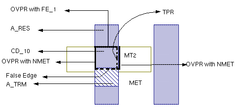

5
Extracting RC Parasitics
This chapter deals with the following topics:
- About RC Extraction
- Ensuring Accuracy in RC Extraction
- Extracting Parasitic Capacitance
- Extracting Parasitic Resistance
- Extracting 2.5D MB Parasitics
- Using One Function to Extract RC Parasitics
- Extracting a Single Net
- The Dracula To RCX (dracToRcx) Interface
About RC Extraction
Parasitic resistance and capacitance (RC) between layers of an integrated circuit affect its signal speed. To calculate RC values, you define parasitics in your Dracula rules file, extract them, and use a delay calculator to calculate delays from the RC values.
- General information about achieving accuracy in RC extraction
- Basic types of RC parasitics and how to extract them
Only parasitic capacitors and resistors are described here. For more information about extracting capacitor and resistor devices, see Chapter 2, “Writing Rules for Dracula,” in this manual.
The complete rules files are not included for examples in this chapter. Only the functions needed to demonstrate certain types of RC extraction are listed. When you see a “<functions deleted>” note in the listing, it means that lines have been omitted.
Ensuring Accuracy in RC Extraction
When you supply information about your manufacturing process, Dracula uses it to extract and calculate capacitance and resistance. The accuracy of the constants you supply is an important factor in the accuracy of the values that Dracula extracts. The values you supply are as follows:
- Constant values for capacitance and resistance per unit
- Adjustments for masking and fabrication effects
- Equations for calculating resistance and capacitance values
These values are described in the sections that follow.
Providing Constants
To calculate capacitance and resistance, Dracula needs the constants you supply with the PARASITIC CAP and PARASITIC RES statements.
For suggestions about using constants in debugging, see “Constants for Debugging Capacitance”.
Adjusting Your Design Database for Fabrication Effects
The masking and fabrication processes alter the shapes of layout geometries. The increase or decrease in size, in turn, alters resistance and capacitance of the chip. To adjust for masking and fabrication effects, follow these steps:
-
Determine the amount of distortion that masking and fabrication have on each layer.
Ask your process engineers for this information. -
Determine whether the percentage of inaccuracy caused by this distortion is greater or less than the accuracy you want to achieve.
For example, if the process distorts a layer by + .01%, can you ignore the effects, or do you need to account for the distortion in the rules file? -
If you need to adjust for distortion, determine how to implement your adjustments in the rules file.
For example, if a layer “grows” during processing, useSIZEto increase its dimensions for verification. Your Field Applications Engineer (FAE) can help you with complex adjustments.
Using Equations with Flexible LPE
You might need to specify unique or detailed equations for RC extraction to reflect your manufacturing process. The Flexible LPE capability in Dracula lets you create custom equations. It consists of these functions:
-
PARSET— lists the set of parameters that you want to extract, such as area and perimeter -
LEXTRACT— gives the parameter set and the layers to use in the extraction -
EQUATION— gives the equation to use to calculate the value you want
The following example shows a calculation for extracting capacitance. It defines a parameter set called CPA that lists four parameters to be extracted: perimeter (PERI), perimeter of the first layer overlapping the second layer (OVPR), area (AREA), and capacitance (C).
C is a reserved parameter keyword for which you supply a calculation in an EQUATION statement following LEXTRACT. You can use PERI, AREA, and OVPR, which are geometric primitives defined in Dracula, in your equation.
Here is an example that demonstrates Flexible LPE:
;
; <functions omitted>
;
PARSET CPA PERI OVPR AREA C
;
; <functions omitted>
;
LEXTRACT CPA CAP32 NME3 BY CAP[A] CAPA32 &
EQUATION C = 1 * AREA + 1 * (PERI - OVPR) + 1 * OVPR
; <functions omitted>
As shown in the EQUATION statement, you can specify a calculation that reflects your technology and process using predefined parameters and constants.
See the Dracula Reference manual for more information about:
- Parameters and Flexible LPE — The “Flexible LPE” section in the “Extracting Electrical Parameters (LPE)” chapter
-
PARSET— The “PARSET” section in the “Description Block Commands” chapter -
LEXTRACT— The “LEXTRACT” section in the “Operation Block Commands” chapter -
EQUATION— The “EQUATION” section in the “Operation Block Commands” chapter
Sample rules files using Flexible LPE can be found in the following sections of this chapter:
- “Extracting Directional Sidewall Capacitance”
- “Correcting for Colinear Sidewall Capacitance”
- “Extracting Contact Resistors”
- “Correcting Sidewall Capacitance”
- “Extracting Sidewall Capacitance with Fringing Effects”
Extracting Parasitic Capacitance
The basic types of parasitic capacitance that you might want to extract are
- Overlap capacitance — a capacitor formed by the overlap of two conductive areas
- Sidewall capacitance — the capacitance between the edge of a conductive layer and the area of a conductive layer above or below it
- Fringe capacitance — the capacitance between edges on the same or different conductive layers
You might also need to include rules in your file that
- Correct capacitance calculations to remove the duplication caused by colinear edge sidewall capacitance
- Extract over-the-cell routing wire overlap capacitance with cell geometries in HLPE
- You extract capacitance by defining the device recognition layers and specifying the equations for calculating parasitic values in your rules file.
This section might not cover all the types of capacitance that you want to extract. However, you can use the examples in this section as general guidelines to develop similar methods for extracting parasitic capacitance from your layout.
Preparing To Extract Capacitance
To prepare for coding capacitance extraction in your Dracula rules file, do the following:
- Decide whether to output capacitance as a lump sum or cross-coupled value.
- Make sure you have power and ground connected to your circuit in a way that Dracula can understand.
- Be familiar with the Dracula functions for capacitance extraction.
These preparations are described in the sections that follow.
Selecting the Capacitance Output Format
You can use the LPESELECT function to output capacitances in two different ways:
-
Lump sum — Capacitance between two signal nodes is duplicated for the two nodes. Then, all capacitances to a given signal node are lumped together and reported as being a capacitance to ground. When lump sum capacitance is requested, Dracula outputs n capacitors (per capacitor type requested), where n is the number of nodes.
If your purpose is to check the capacitance loading effects on signal speed, this method is accurate enough. Here is an example of the SPICE output for node Q1B, where metal-to-metal capacitance is extracted and reported as lump sum capacitance:C2 Q1B VSS 1.68510E-02PF
-
Cross-coupled — When you request cross-coupled capacitance, Dracula reports the capacitance between a node and all other nodes. When cross-coupled capacitance is output, a maximum of n*(n-1) capacitors (per capacitor type requested) are listed, where n is the number of nodes.
Because it outputs the capacitors with the nodes that form them, this method is more accurate than the lump sum method. However, the amount of output increases significantly. Here is an example of the SPICE output for the same node, Q1B, reported as cross-coupled capacitances:C3 Q1B VSS 2.00000E-04PF C4 Q1B X3-45 1.25101E-03PF C5 Q1B X3-11 2.50000E-04PF C6 Q1B Q1 6.00000E-04PF C7 Q1B X3-8 4.20000E-03PF C8 Q1B X3-5 1.04000E-03PF C9 Q1B X3-39 3.38778E-03PF C10 Q1B X3-44 4.05000E-03PF C11 Q1B VDD 1.87222E-03PF
You might try using cross-coupled output while you are debugging your rules file to see if it is easier to check where each capacitor is being formed. You can do the final report in lump sum format.
Connecting Power and Ground
To extract capacitance, you must be sure that your circuit connects to power and ground. If your circuit doesn’t have power and ground, you can add them without affecting the circuit as shown in the following rules file. The following method attaches power and ground to dummy layers without affecting the circuit connectivity.
;
; <functions omitted>
;
*INPUT-LAYER
;
; <functions omitted>
;
METAL1 = 1
;
; <functions omitted>
;
SUBSTRATE = BULK 5
;
; <functions omitted>
;
; BL2 and BL1 are the generated VDD and GND layers
CONNECT-LAYER = BL2 BL1 METAL1
*END
;
*OPERATION
; The edtext file labels VDD and GND
; and attaches them to BL2 and BL1.
EDTEXT = exp.text
;
; <functions omitted>
;
NOT METAL1 BULK CN1 ; CN1 is an empty layer
;
; <functions omitted>
;
; The next function creates layers for
; attaching power and ground.
;
OR BULK CN1 BL1 ; for GND
OR BULK CN1 BL2 ; for VDD
;
; BL1 and BL2 must be in the CONNECT statement
; so the VDD and GND signals can be connected
; to them.
; BL1 and BL2 don’t connect to anything.
;
; <functions omitted>
;
CONNECT BL1 BL2 BY CN1
;
; <functions omitted>
;
*END
The EDTEXT file, exp.text in this example, labels and attaches the VDD and GND nodes with lines like this:
GND X = 0 Y = 0 ATTACH = BL1
VDD X = 0 Y = 0 ATTACH = BL2
where coordinates (0,0) are inside the layout.
Using the Extraction Functions
- The steps that you follow to extract parasitic capacitors from your layout
- Which functions to use for each step
-
Where to put the functions in your Dracula rules file
Constants for Debugging Capacitance
The following are some techniques you might use to debug your capacitance extraction:
-
You can use a constant of 1 in the
ATTRIBUTE CAPstatement when you first code and debug a Dracula rules file. Then, when you’re sure that you’re extracting the correct capacitances, you can replace 1 with accurate constants you get from the process engineers. -
Another useful technique to make your capacitance values easier to check is to extract each fringe capacitor so that the capacitance equals the width:
ATTRIBUTE CAP[MF] 0.8 0.8
-
Another method is to use “100 .01” as constants for the
ATTRIBUTE CAPstatement. By separating the two components by zeros, it is easy to check your results. Output capacitances come out in nn00.mm format, where nn is the area component and mm is the perimeter.
Extracting Overlap and Sidewall Capacitance
To extract overlap and sidewall capacitance, you create device recognition areas using AND to combine the two layers that form the capacitor. If there is an intervening third layer, you can use NOT to remove it. The following example removes any poly areas from the metal-to-N+ parasitic capacitance.
NOT MET POLY METNP ; metal with poly removed
AND METNP NSD MNSD ; metal to N+ capacitance
;
PARASITIC CAP[B] MNSD MET NSD ; metal to N+ capacitance
To create the parasitic capacitor and specify capacitance per area unit, use the PARASITIC CAP and ATTRIBUTE CAP functions.
The ATTRIBUTE CAP function specifies a capacitance value for both area (overlap) and perimeter (sidewall) calculations.
The following figure shows a capacitor recognition area created by ANDing the metal and poly layers. The resulting layer, metpol, is the metal-to-poly capacitor layer. The corresponding rules file follows the figure.
Rules File
*DESCRIPTION
;
; <functions omitted>
;
SCHEMATIC = LVSLOGIC
UNIT = CAPACITANCE,PF AREA,P
;
; <functions omitted>
;
*END
*INPUT-LAYER
;
; <functions omitted>
;
POLY = 3
METAL = 6
;
; <functions omitted>
*END
*OPERATION
;
; <functions omitted>
AND METAL POLY METPOL metal-to-poly capacitance
;
; <functions omitted>
LVSCHK optional ; makes schematic node
names available in the output
;
; <functions omitted>
PARASITIC CAP[MP] METPOL METAL POLY
ATTRIBUTE CAP[MP] 1 1
;
; <functions omitted>
LPESELECT[S] CAP GT 0.0 OUTPUT SPIC
*END
Using the UNIT Function
The previous example used the UNIT function. When you use this function in your rules file, LPESELECT prints the unit next to the values in the SPICE file. The following example shows a portion of a SPICE file that was created without the UNIT function.
***********************************************
****** DIODE PARAMETERS FROM : 7DIOXMER
*
D4 GND Y N 149.50 59.00
*
The following SPICE file was created using this UNIT function:
UNIT = AREA,P PERIMETER,U
*****************************************************
****** DIODE PARAMETERS FROM : 7DIOXMER
*
D4 GND Y N 149.50P 59.00U
*
Extracting Directional Sidewall Capacitance
You use the same functions to extract sidewall capacitance as you used to extract overlap capacitance. Where overlap capacitance is area-to-area capacitance, however, sidewall capacitance is edge-to-area capacitance. It can be directional, as shown in the following side-view layer illustration.
To specify perimeter, overlapping perimeter, area, and capacitance extraction, you need to define a parameter set with the PARSET statement. You can then use a combination of LEXTRACT and EQUATION functions to precisely extract capacitance for the directional edges.
The following example shows a directional sidewall calculation for the capacitance between METAL3, which is the upper layer, and the METAL2 layer. This sidewall capacitance is extracted as shown:
The NOT BULK METAL3 operation produces a “negative” of the METAL3 layer, NME3. The overlap perimeter calculated by the OVPR function uses the edges that touch or overlap the NME3 layer, in this case, the METAL3 edges on the CAP32 layer.
1 in the EQUATION statement is to show that you can use constant values in equations.EQUATION C = 1 * AREA + 1 * (PERI - OVPR) + 1 * OVPR
specifies this directional sidewall capacitance:
-
Sidewall-up capacitance
The equation subtracts theOVPR(METAL3) edges from the total perimeter (PERI) of the CAP32 geometry, which gives the sidewall capacitance of the METAL2 edges to the METAL3 area. -
Sidewall-down capacitance
The equation includes the overlap perimeter, which gives the sidewall capacitance of METAL3 edges to the METAL2 area.
This technique can be extended and gets more complex as more interconnect layers are included in the extraction.
Here’s an excerpt from a directional sidewall rules file dealing with three interconnect layers.
*DESCRIPTION
;
; <functions omitted>
;
; parameter set CPA specifies perimeter, overlap
; perimeter, and capacitance parameters
;
PARSET CPA PERI OVPR AREA C
;
; <functions omitted>
;
*END
*INPUT-LAYER
;
; <functions omitted>
;
METAL3 = 1
METAL2 = 2
METAL1 = 3
SUBSTRATE = BULK 5
;
CONNECT-LAYER = BL2 BL1 BULK METAL1 METAL2 METAL3
*END
*OPERATION
;
; <functions omitted>
;
NOT BULK METAL1 NME1
NOT BULK METAL3 NME3
;
; create capacitor recognition layers
AND METAL3 METAL2 CAP32; metal3-to-metal2 caps
;
AND METAL2 METAL1 CAP21; metal2-to-metal1 caps
;
; <functions omitted>
;
; specify parasitic capacitances
PARASITIC CAP[A] CAP32 METAL3 METAL2
ATTRIBUTE CAP[A] 1 1
;
PARASITIC CAP[B] CAP21 METAL2 METAL1
ATTRIBUTE CAP[B] 1 1
;
; <functions omitted>
;
; METAL2/METAL3 parasitics
LEXTRACT CPA CAP32 NME3 BY CAP[A] CAPA32 &
EQUATION C = 1 * AREA + 1 * (PERI - OVPR) + 1 * OVPR
;
; METAL1/METAL2 parasitics
LEXTRACT CPA CAP21 NME1 BY CAP[B] CAPA21 &
EQUATION C = 1 * AREA + 1 * (PERI - OVPR) + 1 * OVPR
;
; build the netlist
LPESELECT[C] CAP[A] &
LPESELECT[C] CAP[B] OUTPUT CDL
*END
Correcting for Colinear Sidewall Capacitance
Sometimes, edges of two layers that make up a capacitor recognition layer are colinear. For example
In this case, both sidewall-up and sidewall-down capacitances are calculated, which inaccurately represents the real capacitance value.
The two rules files that follow remove the double calculation for colinear edges:
- The first file splits parasitic capacitance into three subtypes for debugging purposes.
- The second file uses more efficient conjunctive commands.
Sample Rules File for Debugging Colinear Capacitance
The following example illustrates how to extract and calculate the sidewall capacitances for the separate edges of the METAL3-to-METAL2 capacitor layer.
The NOT BULK METAL3 and METAL2 operations produce “negatives” of the METAL3 and METAL2 layers. Other logical operations create areas for the OVPR function, which uses edges that touch or overlap.
The following example splits a parasitic capacitance into three subtypes for debugging purposes. A more efficient method for extracting this kind of capacitance when you don’t need to debug is shown in the next section.
*DESCRIPTION
;
; <functions omitted>
;
; parameter set CPA specifies perimeter, overlap
; perimeter, and capacitance parameters
PARSET CPA OVPR C
;
*END
*INPUT-LAYER
;
; <functions omitted>
;
METAL3 = 1
METAL2 = 2
METAL1 = 3
SUBSTRATE = BULK 5
;
CONNECT-LAYER = BL2 BL1 BULK METAL1 METAL2 METAL3
*END
*OPERATION
;
; <functions omitted>
;
; create "negative" layers
NOT BULK METAL3 NME3
NOT BULK METAL2 NME2
;
; combine the "negative" layers
AND NME3 NME2 NME32
;
; create layer with non-colinear edges
NOT NME3 NME32 NME3N2
NOT NME2 NME32 NME2N3
;
; <functions omitted>
;
; create capacitor recognition layer
AND METAL3 METAL2 CA32; metal3-to-metal2 caps
;
; create capacitor recognition layers for each edge:
; each PARASITIC statement must have a unique
; capacitor recognition layer
;
AND BULK CA32 CA323
AND BULK CA32 CA3232
AND BULK CA32 CA322
;
; <functions omitted>
;
; specify parasitic capacitances
PARASITIC CAP[A] CA323 METAL3 METAL2
ATTRIBUTE CAP[A] 1 1
;
PARASITIC CAP[B] CA3232 METAL3 METAL2
ATTRIBUTE CAP[B] 1 1
;
PARASITIC CAP[C] CA322 METAL3 METAL2
ATTRIBUTE CAP[C] 1 1
;
; <functions omitted>
;
; extract the metal3 edges
LEXTRACT CPA CA323 NME3N2 BY CAP[A] C323N2 &
EQUATION C = 1 * OVPR
;
; extract the colinear edge
LEXTRACT CPA CA3232 NME32 BY CAP[B] C3232 &
EQUATION C = 1 * OVPR
;
; extract the metal2 edge
LEXTRACT CPA CA322 NME2N3 BY CAP[C] C322N3 &
EQUATION C = 1 * OVPR
;
; <functions omitted>
;
; build the netlist
LPESELECT[C] CAP[A] &
LPESELECT[C] CAP[B] &
LPESELECT[C] CAP[C] OUTPUT CDL
*END
Sample Rules File for Extracting Colinear Edge Capacitance
You can also extract colinear sidewall capacitance using conjunctive LEXTRACT/EQUATION functions. This sample rules file groups the three types of capacitance extracted in the previous section into a single subtype.
*DESCRIPTION
;
; <functions omitted>
;
; parameter set CPA specifies perimeter, overlap
; perimeter, and capacitance parameters
PARSET CPA OVPR P3 PO C
*END
*OPERATION
;
; <functions omitted>
;
; create "negative" layers
NOT BULK METAL3 NME3
NOT BULK METAL2 NME2
;
; combine the "negative" layers
AND NME3 NME2 NME32
;
; create layer with non-colinear edges
NOT NME3 NME32 NME3N2
NOT NME2 NME32 NME2N3
;
; <functions omitted>
;
; create capacitor recognition layers
AND METAL3 METAL2 CA32; metal3-to-metal2 caps
;
; specify parasitic capacitances
PARASITIC CAP[A] CA32 METAL3 METAL2
ATTRIBUTE CAP[A] 1 1
;
; conjunctive rules
LEXTRACT CPA CA32 NME3N2 BY CAP[A] C32 & ; metal3 edges
EQUATION P3 = 1 * OVPR &; save to P3 LEXTRACT CPA CA32 NME32 BY CAP[A] & ; colinear edges EQUATION PO = 1 * OVPR &; save to PO ; ; <functions omitted> ; LEXTRACT CPA CA32 NME2N3 BY CAP[A] & ; metal2 edge
EQUATION C = 1 * OVPR + P3 + P
;
; <functions omitted>
;
; build the netlist
LPESELECT[C] CAP[A] OUTPUT CDL
*END
Extracting Single-Layer Fringe Capacitance
You can extract the fringe capacitance between edges on a single layer as shown in the sample rules file that follows. Dracula checks edges within the distance you specify, and ignores the others.
*DESCRIPTION
;
; <functions omitted>
UNIT = CAPACITANCE,PF
;
*END
*INPUT-LAYER
;
; <functions omitted>
METAL = 6
;
; <functions omitted>
*END
*OPERATION
;
; <functions omitted>
PARASITIC CAP[MF] METAL METAL METAL ; fringe capacitors on
ATTRIBUTE CAP[MF] 10 0.00005; the METAL layer
;
; <functions omitted>
LPESELECT[S] CAP GT 0.0 OUTPUT SPICE
*END
The values that you supply with the ATTRIBUTE CAP statement vary depending upon the type of capacitance you are extracting. The values for single-layer fringe capacitance are
ATTRIBUTE CAP separation capacitance
The maximum separation between edges. In the previous rules file, capacitance is calculated for metal edges within 10 units or less of each other.
The capacitance multiplier. The capacitance value is 0.00005 picofarads per perimeter unit in the previous rules file. The capacitance unit is set to PF with the UNIT function in the Description block.
Extracting Two-Layer Fringe Capacitance
This section shows how to extract the fringe capacitance between edges on two different layers. This rules file uses the FRINGE CAP function, which extracts capacitance between the edges of different nodes. Capacitance is not extracted for edges of the same electrical node.
*DESCRIPTION
;
; <functions omitted>
;
UNIT = CAPACITANCE,PF
*END
*INPUT-LAYER
;
; <functions omitted>
;
METAL3 = 1
METAL2 = 2
METAL1 = 3
*END
*OPERATION
;
; <functions omitted>
;
FRINGE CAP[A] METAL1 METAL2
ATTRIBUTE CAP[A] 0.9 0.9
;
FRINGE CAP[B] METAL1 METAL3
ATTRIBUTE CAP[B] 0.8 0.8
;
FRINGE CAP[C] METAL2 METAL3
ATTRIBUTE CAP[C] 0.9 0.9
;
; <functions omitted>
;
LPESELECT[A] CAP[A] &
LPESELECT[A] CAP[B] &
LPESELECT[A] CAP[C] OUTPUT CDL
*END
The A option for the LPESELECT function includes power and ground nodes in the extraction. Because the C option, which outputs cross-coupled rather than lump-sum capacitances, conflicts with the A option, you can’t use it. Instead, use the T option, which includes the power and ground signals in the coupling report.
Extracting Over-the-Cell Routing Wire Overlap Capacitance with Cell Geometries in HLPE
Dracula HLPE/HPRE does not extract composite-to-cell overlapped parasitic capacitors in composite mode by default. To extract these overlap capacitances, use the EXPLODE function.
This function flattens the cell geometries to the composite plane. It assigns composite node numbers to nodes connected to the composite plane, as shown for node1 and node2 in the figure. External nodes are cell nodes that connect to the composite plane by instance pins.
Dracula connects signals that are completely internal to the Hcell to a signal that you specify in the EXPLODE function. Internal signals are connected to VSS in this example:
EXPLODE POLY GPOLY VSS
The sample rules file that follows shows two ways of using the EXPLODE function:
-
Without the
Aoption
The output layer contains only the flattened cell data. -
With the
Aoption
The output layer contains the merged composite and flattened cell geometries.*DESCRIPTION CHECK-MODE = COMPOSITE ; ; <functions omitted> ; CONNECT-LAYER = POLY MT1 MT2 ; ; <functions omitted> ; CONNECT MT2 MT1 BY VIA CONNECT MT1 POLY BY CONT ; ; <functions omitted> ; ; EXPLODE{[A]} input-layer output-layer labelname ; Without the A option specified in the EXPLODE function, ; the output layer contains only the flattened cell data. ; When the A option is used, the output ; layer contains the merged data of composite and ; flattened cell geometries. ; ; Using the [A] option EXPLODE[A] POLY GPOLY VSS EXPLODE[A] MT1 GMET1 VSS AND MT2 GMT1 M2AM1 composite MT2 to all MT1
AND GMT1 GPOLY AM1APL ; all MT1 to all POLY, ; including ; cell-to-cell overlap ; capacitance ; ; Without the [A] option EXPLODE MT1 XMET1 VSS AND MT2 MT1 M2M1 ; comp MT2 to comp MT1 AND MT2 XMET1 M2CM1 ; comp MT2 to cell MT1 EXPLODE POLY XPOLY VSS AND MT1 POLY M1PL ; comp MT1 to comp POLY AND MT1 XPOLY M1CPL ; comp MT1 to cell POLY AND XMET1 XPOLY CM1CPL ; cell MT1 to cell POLY ; ; <functions omitted> ; PARASITIC CAP[A] M2AM1 MT2 GMT1 ATTRIBUTE CAP[A] 1 1 PARASITIC CAP[B] AM1APL GMT1 GPOLY
EXPLODE function in the 4.1hot version, add EXCEPTION-ON = [EXPLODE] as the first line in the Description block.Extracting Parasitic Resistance
The basic types of parasitic resistors that you might want to extract are
You do not need to extract corner and junction resistors explicitly, because the CUT-TERM function automatically extracts them. For more information about corner and junction resistors, see
You might also need to include rules in your file that
- Correct sidewall capacitance to remove resistor edges
- Extract fringe capacitance in PRE
- Control how contacts are cut
To extract resistance, do the following in your rules file:
This section might not cover all the types of resistance that you want to extract. However, you can use the examples in this section as general guidelines to develop similar methods for extracting parasitic resistance from your layout.
Preparing to Extract Resistance
To prepare for coding resistance extraction in your Dracula rules file, do the following:
- Extract and verify capacitance
- Specify a pad layer
- Be familiar with the Dracula functions for resistance extraction
These preparations are described in the sections that follow.
Extracting Capacitance
Because resistors change a single node into multiple nodes, always extract capacitors before you extract resistors. This process lets you verify that you have extracted capacitance correctly before you add resistor extraction to the rules file.
After you add resistance, validate that the capacitance is being extracted correctly by comparing the capacitance reported by the capacitance-only run with the results from the RC extract run.
Specifying a Pad Layer
When resistor extraction divides nodes into subnodes, Dracula uses the pad layer to determine which subnode represents a cell I/O. If you don’t specify a pad layer, Dracula might choose a node that might not be used as an I/O when the cell is connected into a circuit.
Depending on the level at which you are running Dracula, you can specify the pad layer as follows:
- Top-level cell — the pad layer you digitized in the layout
- Lower cells — the pins you specified to a place-and-route tool when you created the layout
Internal nodes do not need a pad layer.
If you define a “pad layer” in a lower level cell, it is ignored when you run Dracula on the upper level cell. Dracula also ignores pins on nodes that are inside a block created by a place-and-route tool.
If you cannot get the pad layer directly from the layout, here’s how to generate a pad layer:
*INPUT-LAYER
;
; <functions omitted>
;
METAL = 6
PAD-LAYER = PAD
SUBSTRATE = BULK 8
*END
*OPERATION
;
; <functions omitted>
;
; Create pad layer
SIZE BULK BY -2 NOPAD
NOT METAL NOPAD PAD
;
; <functions omitted>
;
*END
The subnodes that represent the I/O for a sample layout are created with the NOT function as shown in the following figure.
For composite mode, you must first flatten the bulk layer to create a pad layer similar to the one in flat mode:
FLATTEN BULK ABULK
FLATTEN METAL AMETAL
SIZE ABULK BY -2 NOPAD
NOT AMETAL NOPAD APAD
HIERARCHEN APAD PAD
Using the Extraction Functions
The table in this section lists
- The steps for extracting resistors from your layout
- Which functions to use for each step
-
Where to put the functions in your Dracula rules file
Creating Resistor Recognition Layers
You can create the recognition layer for a parasitic resistor using one of these functions:
Using CUT-TERM is the easiest method because you only need one function to create parasitic resistor layers. The Dracula Reference has a complete description of the CUT-TERM function in the Operation Block Commands chapter. A number of sample rules files in this chapter use the CUT-TERM function.
The CUT function gives you more control over resistor creation than the CUT-TERM function, but requires you to write about 10 additional lines of Dracula code.
Logical and spacing functions can’t duplicate all the processing that CUT-TERM and CUT do. You use logical and spacing functions to cut the resistor recognition layer out of irregular shapes, such as source/drains. For details, see the example in “Extracting Diffusion Resistors”.
Extracting Simple Metal and Poly Resistors
This section describes how to extract metal and poly resistors from a silicon-gate CMOS layout. The CUT-TERM function is used to create resistor body and terminal layers.
;
; <functions omitted>
;
*INPUT-LAYER
PWELL = pwell
ACTIVE = active
POLY = poly
PDIFF = pdiff
CONT = contact
MET = metal
VAPOX = vapox
;
; <functions omitted>
;
CONNECT-LAYER = NWELL PWELL PSD NSD POLY MET
;
; <functions omitted>
;
; reconnect the network
RCONNECT-LAYER = NWELL PWELL PSD NSD PLYTRM METTRM
*END
*OPERATION
;
; <functions omitted>
;
AND ACTIVE PDIFF PPLUS
NOT ACTIVE PPLUS NPLUS
AND POLY PPLUS PGATE
AND POLY NPLUS NGATE
NOT NPLUS NGATE NSD
NOT PPLUS PGATE PSD
AND PSD PWELL PCONT
AND NSD NWELL NCONT
;
; <functions omitted>
;
; <insert layer interconnections with CONNECT here>
;
; <include ELEMENT and LVSCHK/LPECHK functions here>
;
; create the resistors
CUT-TERM MET CONT METRES METTRM;create metal resistors
STAMP METTRM BY MET;transfer node info
;
OR NGATE PGATE GATE;combine all gate areas
CUT-TERM POLY CONT PLYRES PLYTRM GATE ; create poly res.
STAMP PLYTRM BY POLY;transfer node info
;
; <functions omitted>
;
; re-connect the network
RCONNECT METTRM PLYTRM BY CONT
RCONNECT METTRM PSD BY CONT
RCONNECT METTRM NSD BY CONT
RCONNECT PSD PWELL BY PCONT
RCONNECT NSD NWELL BY NCONT
;
; <functions omitted>
;
; define parasitic resistor devices & values
PARASITIC RES[ME] METRES METTRM ; metal resistor
ATTRIBUTE RES[ME] 0.06;sheet resistance, ohms/sq
;
PARASITIC RES[PL] PLYRES PLYTRM ; poly resistor
ATTRIBUTE RES[PL] 25.0;sheet resistance, ohms/sq
;
; <functions omitted>
;
; generate output for SPICE file
LPESELECT[S] RES GE 10 OUTPUT SPICE
;
; <functions omitted>
;
; generate output for DSPF file
SPFSELECT[S] RES GE10 OUTPUT SPF
*END
Extracting Two-Layer Metal Parasitics
When you extract resistance and capacitance from a design with two metal layers, you must OR the contact and via layers into a single layer. This layer is used as the contact layer for the CUT-TERM function on the first metal layer. The following rules file, which extracts both capacitance and resistance, uses this technique for a double-metal CMOS process:
;
; <functions omitted>
;
*INPUT-LAYER
NDIFF=1
NWELL=2
POLY=4
CONT=5
MET1=6
PDIFF=7
VAPOX=8
VIA=9
MET2=10
SUBSTRATE = BULK 64
CONNECT-LAY= PWELL NWELL PSD NSD POLY MET1 MET2
RCONNECT-LAY= PWELL NWELL PSD NSD POLY MTRM M2TRM
PAD-LAYER = VAPOX ; pad at passivation layer
*END
;
*OPERATION
;
; <functions omitted>
;
NOT BULK NWELL PWELL
NOT PDIFF POLY PACTIVE
NOT NDIFF POLY NACTIVE
AND POLY NDIFF NGATE
AND POLY PDIFF PGATE
OR NGATE PGATE GATE
AND NACTIVE NWELL NWCONT
NOT NDIFF NGATE NSD
NOT PDIFF PGATE PSD
;
; <functions omitted>
;
LVSCHK
;
;**************************************************
; Here begins the second pass - which performs *
; the parasitic resistor extraction *
;**************************************************
;
;Cutting resistors on MET1 layer
;OR all of the contact layers together before cut-term
;
OR VIA CONT MCON
CUT-TERM MET1 MCON MRES MTRM
STAMP MTRM BY MET1
;
;Cutting resistors on MET2 layer
;
CUT-TERM MET2 VIA M2RES M2TRM
STAMP M2TRM BY MET2
;
RCONNECT M2TRM MTRM BY VIA
RCONNECT NSD NWELL BY NWCONT
RCONNECT PSD PWELL BY PWCONT
RCONNECT MTRM POLY BY CONT
RCONNECT MTRM NSD BY CONT
RCONNECT MTRM PSD BY CONT
;
AND NSD PWELL NDIO
NOT PSD PWELL PDIO
LINK BULK TO VSS
;
; *** MET1 ***
NOT MTRM POLY MNTRP ; m1 resistor terminal not over poly
NOT MRES POLY MNREP ; m1 resistor not over poly
AND MTRM POLY MTPLY ; m1 resistor terminal to poly
AND MRES POLY MRPLY ; m1 resistor to poly
AND MNTRP DIFF MNTD ; m1 resistor terminal to diff cap
AND MNREP DIFF MNRD ; m1 resistor to diff cap
NOT MNTRP MNTD MNTND ; m1 resistor terminal not over
; poly,diff
NOT MNREP MNRD MNRND ; m1 resistor not over poly,diff
AND MNTND BULK MTF ; m1 resistor terminal to field cap
AND MNRND BULK MRF ; m1 resistor to field cap
;
; *** MET2 ***
NOT M2TRM MET1 M2NTM ; m2 resistor terminal not over m1
NOT M2RES MET1 M2NRM ; m2 resistor not over m1
AND M2TRM MTRM M2TT ; m2 resistor terminal to m1 RT cap
AND M2RES MTRM M2RT ; m2 resistor to m1 RT cap
AND M2TRM MRES M2TR ; m2 resistor terminal to m1
; resistor cap
AND M2RES MRES M2RR ; m2 resistor to m1 resistor cap
AND M2NTM POLY M2TPLY ; m2 resistor terminal to poly cap
AND M2NRM POLY M2RPLY ; m2 resistor to poly cap
NOT M2NTM POLY M2TMP ; m2 resistor terminal not over
; metal,poly
NOT M2NRM POLY M2RMP ; m2 resistor not over metal,poly
AND M2TMP DIFF M2TD ; m2 resistor terminal to diff cap
AND M2RMP DIFF M2RD ; m2 resistor to diff cap
NOT M2TMP M2TD M2NTD ; m2 resistor terminal not over
; metal, poly, diff
NOT M2RMP M2RD M2NRD ; m2 resistor not over
; metal, poly, diff
AND M2NTD BULK M2TF ; m2 resistor terminal to field cap
AND M2NRD BULK M2RF ; m2 resistor to field cap
;
; *** POLY ***
NOT POLY GATE PLY1
AND PLY1 BULK PTF ; poly (exclude GATE) to field cap.
;
; <functions omitted>
;
PARASITIC RES[R1] MRES MTRM
ATTRIBUTE RES[R1] 94
;
PARASITIC RES[R2] M2RES M2TRM
ATTRIBUTE RES[R2] 60
;
; *** Fringe capacitance ***
FRINGE[R] CAP[FA] M2RES M2TRM ; m2 fringe capacitance
ATTRIBUTE CAP[FA] 10 .0093
;
FRINGE[R] CAP[FB] MTRM MRES ;MRES fringe capacitance
ATTRIBUTE CAP[FB] 10 .0079
;
; *** Overlap capacitance ***
PARASITIC CAP[P1] MTPLY MTRM POLY ;M1 terminal to POLY cap
ATTRIBUTE CAP[P1] .00596 0.0123
;
PARASITIC CAP[P2] MRPLY MRES POLY ;M1 resistor to POLY cap
ATTRIBUTE CAP[P2] .00596 0.0123
;
PARASITIC CAP[D1] MNTD MTRM DIFF ;M1 terminal to DIFF cap
ATTRIBUTE CAP[D1] .00596 0.0126
;
PARASITIC CAP[D2] MNRD MRES DIFF ;M1 resistor to DIFF cap
ATTRIBUTE CAP[D2] .00596 0.0126
;
PARASITIC CAP[F1] MTF MTRM BULK ;M1 terminal to FIELD cap
ATTRIBUTE CAP[F1] .0033 0.0098
;
PARASITIC CAP[F2] MRF MRES BULK ;M1 resistor to FIELD cap
ATTRIBUTE CAP[F2] .0033 0.0098
;
PARASITIC CAP[M1] M2TT M2TRM MTRM ;M2 terminal to
ATTRIBUTE CAP[M1] .0084 0.0101 ;M1 terminal cap
;
PARASITIC CAP[M2] M2RT M2RES MTRM ;M2 resistor to
ATTRIBUTE CAP[M2] .0084 0.0101 ;M1 terminal cap
;
PARASITIC CAP[M3] M2TR M2TRM MRES ;M2 terminal to
ATTRIBUTE CAP[M3] .0084 0.0101 ;M1 resistor cap
;
PARASITIC CAP[M4] M2RR M2RES MRES ;M2 resistor to
ATTRIBUTE CAP[M4] .0084 0.0101 ;M1 resistor cap
;
PARASITIC CAP[P3] M2TPLY M2TRM POLY ;M2 terminal to
ATTRIBUTE CAP[P3] .0037 0.0067 ;POLY cap
;
PARASITIC CAP[P4] M2RPLY M2RES POLY ;M2 resistor to
ATTRIBUTE CAP[P4] .0037 0.0067 ;POLY cap
;
PARASITIC CAP[D3] M2TD M2TRM DIFF ;M2 terminal to DIFF cap
ATTRIBUTE CAP[D3] .0033 0.0062
;
PARASITIC CAP[D4] M2RD M2RES DIFF ;M2 resistor to DIFF cap
ATTRIBUTE CAP[D4] .0033 0.0062
;
PARASITIC CAP[F3] M2TF M2TRM BULK ;M2 terminal to
ATTRIBUTE CAP[F3] .0053 0.0026 ;field cap
;
PARASITIC CAP[F4] M2RF M2RES BULK ;M2 resistor to
ATTRIBUTE CAP[F4] .0053 0.0026 ;field cap
;
PARASITIC CAP[P5] PTF POLY BULK ;POLY to field cap
ATTRIBUTE CAP[P5] .0065 0.0076
;
; <functions omitted>
;
LPESELECT[S] CAP GT 0.0 &
LPESELECT[S] RES GT 0.0 OUTPUT SPICE
;
*END
Extracting Contact Resistors
The partial rules file in this section extracts simple parasitic metal and poly resistors, as well as metal/poly contact resistors.
The current flow of the parasitic resistors on the interconnect wire is horizontal, while the current flow of the contact resistors is vertical. To form contact resistors, you create two RCONNECT-LAYER layers. These layers are the terminal layers of the contact resistors on the upper and lower layers to which the contact connects.
To form contact resistors, break the connection between the two RCONNECT-LAYER layers and define the contact between them as the contact resistor body layer. The two RCONNECT-LAYER layers become the terminal layers on the upper and lower sides of the contact resistors.
The following figure demonstrates this concept, where C1TRM and C2TRM are the RCONNECT-LAYER layers:

This rules file combines contacts to metal and poly resistors on one contact resistor recognition layer.
*DESCRIPTION
;
; <functions omitted>
;
PARSET = CTR1 AREA R
*END
*INPUT-LAYER
PWELL = 1
ACTIVE = 2
POLY = 3
PIMP = 4
CONT = 5
METAL = 6
SUBSTRATE = BULK 99
;
CONNECT-LAYER = NSUB PWELL PSD NSD POLY METAL
RCONNECT-LAYER = NSUB PWELL PSD NSD PTRM MTRM
PAD-LAYER= VAPOX
*END
*OPERATION
;
; <functions omitted>
;
NOT BULK PWELL NSUB
AND ACTIVE PIMP PPLUS
NOT ACTIVE PPLUS NPLUS
AND POLY PPLUS PGATE
AND POLY NPLUS NGATE
NOT NPLUS NGATE NSD
NOT PPLUS PGATE PSD
AND PSD PWELL PTAP
AND NSD NSUB NTAP
;
; connect the circuit
;
CONNECT METAL POLY BY CONT
CONNECT METAL PSD BY CONT
CONNECT METAL NSD BY CONT
CONNECT PSD PWELL BY PTAP
CONNECT NSD NSUB BY NTAP
;
; <functions omitted>
;
; cut resistors on poly layer
;
OR NGATE PGATE GATE; all gates on interconnect layer
CUT-TERM POLY CONT PRES PTRM GATE
STAMP PTRM BY POLY
;
; cut resistors on metal layer
;
CUT-TERM METAL CONT MRES MTRM
STAMP MTRM BY METAL
;
; form contact resistor layer
;
AND MTRM CONT C1TRM ; create contact resistor
; terminal layer 1
AND PTRM CONT C2TRM ; create contact resistor
; terminal layer 2
AND PTRM CONT P2CONT ; create dummy contact layer
AND C1TRM C2TRM MPRES ; create contact resistor
; recognition layer
;
; reconnect the circuit
;
RCONNECT MTRM C1TRM BY CONT; MTRM --> C1TRM
RCONNECT MTRM PSD BY CONT
RCONNECT MTRM NSD BY CONT
RCONNECT C2TRM PTRM BY P2CONT ; C2TRM --> PTRM
RCONNECT PSD PWELL BY PTAP
RCONNECT NSD NSUB BY NTAP
;
; <functions omitted>
;
; define parasitic capacitances
;
PARASITIC RES[P] PRES PTRM; poly interconnect resistor
ATTRIBUTE RES[P] 0.01; Kohms per square
;
PARASITIC RES[M] MRES MTRM; metal interconnect res.
ATTRIBUTE RES[M] 0.01; Kohms per square
;
PARASITIC RES[C] MPRES C1TRM C2TRM; metal/poly
ATTRIBUTE RES[C] 0.01 ; contact resistors
;
; Using Flexible LPE to calculate the contact resistor
LEXTRACT CTR1 MPRES BY RES[C] CTRES &
EQUATION R = 0.1 / AREA; contact resistance equation
;
; output results
;
LPESELECT RES GT 0.0 OUTPUT SPICE
;
*END
Extracting Diffusion Resistors
The geometric shape of diffusion layers is different from that of interconnect layers. The following example uses DRC and logical operations to form the terminal layer of the diffusion resistors.
*DESCRIPTION
PARSET PR1 AREA W1 W2 L W R
PARSET PR2 OVPR L W R
;
; <functions omitted>
;
CONNECT-LAYER = PSD NSD POLY METAL
RCONNECT-LAYER= PSDT NSDT POLY METAL
;
*END
*OPERATION
;
; <functions omitted>
;
AND POLY NDIF NGAT
NOT NDIF NGAT NSD
;
; <functions omitted>
;
CONNECT METAL NSDBY CONT
;
; <functions omitted>
;
ELEMENT MOS[N]NGAT POLY NSD
;
; <functions omitted>
;
AND METAL CONT MCON
AND MCON NSD SCON
SIZE NGATE BY 0.001 SNGAT
AND NSD SNGAT T1
NOT NSD T1 SUB1
SELECT SUB1 TOUCH [2:2] T1 RES1
NOT SUB1 RES1 SUB2
SIZE SCON BY 0.8 BCON
EXT[RC] BCON NGATE LT 10 R2
AND SUB2 R2 RES2
AND NSD BCON T2
OR T1 T2 NSDT
STAMP NSDT BY NSD
;
; <functions omitted>
;
RCONNECT METAL NSDT BY CONT
;
; <functions omitted>
;
ELEMENT MOS[N] NGAT POLY NSDT
;
; <functions omitted>
;
PARASITIC RES[R1] RES1 NSDT
ATTRIBUTE RES[R1]1
PARASITIC RES[R2] RES2 NSDT
ATTRIBUTE RES[R2]1
;
LEXTRACT PR2 RES2 T1 BY RES[R2] NRES2 &
EQUATION W = OVPR
LEXTRACT PRES RES2 T2 BY RES[R2] &
EQUATION L = (PERI - W -OVPR)/2
EQUATION R = 1 * L/W
;
LEXTRACT PR1 RES1 NSDT BY RES[R1] NRES1 &
EQUATION W = (W1+W2)/2 &
EQUATION L = AREA/W &
EQUATION R = 1 * L/W /.5
Correcting Sidewall Capacitance
When you specify the perimeter attribute to extract and calculate the sidewall capacitance of overlapped capacitors in PRE, the resulting capacitance value is inaccurate when compared to the same value extracted in LPE. The inaccuracy occurs because the calculation includes the edges formed when the layer was cut into resistors.
The following is an excerpt from a Dracula rules file that corrects that problem.
*DESCRIPTION
;
; <functions omitted>
;
PARSET CPA PERI OVPR
;OPERATION
;
; <functions omitted>
;
; cut resistors on metal layer
;
CUT-TERM METAL CONT MRES MTRM
STAMP MTRM BY METAL
RCONNECT MTRM POLY BY CONT
;
; <functions omitted>
;
; define parasitic capacitance
AND MTRM BULK MTCAP
AND MRES BULK MRCAP
;
PARASITIC CAP[A] MTCAP MTRM BULK
ATTRIBUTE CAP[A] 0 1
PARASITIC CAP[B] MRCAP MRES BULK
ATTRIBUTE CAP[B] 0 1
;
LEXTRACT CPA MTCAP MRCAP BY CAP[A] CAP1&
EQUATION C = 1 * (PERI-OVPR)
;
LEXTRACT CPA MRCAP MTCAP BY CAP[B] CAP2&
EQUATION C = 1 * (PERI - OVPR)
;
; <functions omitted>
Extracting Fringe Capacitance in PRE
When you extract the fringe capacitance of interconnect wires in PRE, you generally use two PARASITIC CAP functions and one FRINGE CAP function:
- Parasitic resistor terminal to parasitic resistor terminal (MTRM to MTRM)
- Parasitic resistor body to parasitic resistor body (MRES to MRES)
- Parasitic resistor terminal to parasitic resistor body (MTRM to MRES)
The following example shows how you can use a single FRINGE[R] CAP function to extract the fringe capacitance of the resistor body and terminal layers resulting from CUT-TERM. When you use the [R] option of the FRINGE function in PRE, you can get the same capacitance value that you get using LPE.
;
; <functions omitted>
;
CONNECT-LAYER = POLY METAL
RCONNECT-LAYER = POLY MTRM
;
; <functions omitted>
;
CONNECT METAL POLY BY CONT
;
; <functions omitted>
;
CUT-TERM METAL CONT MRES MTRM
;
; <functions omitted>
;
RCONNECT MTRM POLY BY CONT
;
; <functions omitted>
;
FRINGE[R] CAP[M] MRES MTRM
ATTRIBUTE CAP[M] 5.0 0.0001
;
; <functions omitted>
Controlling How Contacts Are Cut
The CUT-TERM function enlarges contacts when cutting resistors, so not all resistors are the same size. To control how contacts are cut, use the CUT function rather than CUT-TERM.
MAXNS option of the CUT-TERM function. If you use CUT, there is no way to control how the resistors are divided.
The syntax of the CUT function is
CUT [STRIP] cutLayer stripLayer outputLayer
Used with the STRIP option. This is the parasitic resistor terminal layer that guides the strip cuts in a direction perpendicular to the flow of current.
Contains the results of the CUT function.
Here is an example of the CUT command:
The rules file excerpt that follows uses CUT instead of CUT-TERM.
;
; <functions omitted>
;
*INPUT-LAYER
CONT = 1
VIA = 2
DIFF = 4
METAL1 = 5
METAL2 = 6
RES = 7
;
; <functions omitted>
;
SUBSTRATE = BULK 8
TEMPORARY-LAYER = SUB1 SUB2 SUB3 SUB4
*END
*OPERATION
;
; <functions omitted>
;
; build "negative" layer for filtering out edges
; formed by resistor cuts
;
NOT BULK METAL2 NOM2
;
; <functions omitted>
;
; combine contact and resistor device layer to define
; where not to build resistors
;
OR VIA RES ALLCON
;
; create resistor recognition layers for RES[A}
;
NOT METAL2 ALLCON SUB1
WIDTH[CR] SUB1 LT 2 SUB2
NOT SUB1 SUB2 SUB3
OR ALLCON SUB3 SUB4
CUT STRIP SUB2 SUB4 SUB1
OR SUB4 SUB1 SUB3
NOT SUB2 SUB1 SUB4
SELECT SUB4 TOUCH[2:2] SUB3 M2RES
NOT SUB4 M2RES SUB1
OR SUB1 SUB3 OUTRM
;
; <functions omitted>
;
; transfer nodal information to resistor terminals
;
AND METAL2 OUTRM M2TRM
;
; reconnect with nodes divided by resistors
RCONNECT M2TRM DIFF BY VIA
;
; <functions omitted>
;
; extract parasitic devices
;
PARASITIC RES[A] M2RES M2TRM
ATTRIBUTE RES[A] 1
;
LPESELECT[Y] RES[A] &
.......................OUTPUT CDL
*END
Extracting 2.5D MB Parasitics
Capacitors close together affect each others’ capacitance, a fact that is reflected by the term “2.5 dimensional multibody” (2.5D MB) capacitance. Standard capacitance extraction does not account for this interaction between capacitors sharing the same plate. When you extract only simple capacitance, the effects of other capacitors sharing the same plate are ignored.
As the spacing between geometries shrinks, the reaction between sidewall and fringe capacitors becomes an important consideration. There are six possible combinations of two different capacitors affecting the same point on one plate. You need to consider not only one point on a plate but the area of the plate, so the interrelationship grows exponentially.
Dracula 2.5D MB Capabilities
You can use the ATTRIBUTE CAP function in your rules file to have Dracula extract simple RC and 2.5D MB parasitics. For a description of ATTRIBUTE CAP, see the ATTRIBUTE-CAP function in the “Operation Block Commands” chapter of the Dracula Reference manual.
The following sections describe how Dracula 2.5D MB capabilities can extract
- Single-layer fringe capacitance using piecewise analysis
- Sidewall capacitance, considering fringing effects
Using Piecewise Analysis
You can use multiple ATTRIBUTE CAP statements to specify piecewise linear coefficients for fringe capacitance based upon the distance between geometries on the same layer. For example
PARASITIC CAP[A] METAL3 METAL3 METAL3
ATTRIBUTE CAP[A] 0.8 0
ATTRIBUTE CAP[A] 0.9 0.9
;
; <functions omitted>
;
LPESELECT[C] CAP[A] OUTPUT CDL
In this example, if the distance between two metal edges is 0 to 0.8, no fringe capacitance is extracted. If the distance is 0.9, the capacitance multiplier is 0.9 per perimeter unit.
Extracting Sidewall Capacitance with Fringing Effects
Piecewise analysis with the ATTRIBUTE CAP statement includes
- Standard overlap and perimeter extraction
- Fringe capacitance based on the separation between the device layer and projecting edges of geometries on the first terminal layer
The following figure shows an example.
You write an ATTRIBUTE CAP statement for case 1, where the separation of POLY1 and MP is 0 to 3.0 units. Write another ATTRIBUTE CAP statement to cover case 2, where the separation is 3.0 to 5.0 units. The area and perimeter values stay the same for all cases.
PARSET = TCAP TPR CLL AREA PERI OVPR C
;
; <functions omitted>
AND POLY1 METAL1 MP
;
; sidewall capacitance with fringing effects
PARASITIC CAP[A] MP POLY1 METAL1
ATTRIBUTE CAP[A] 0.5 1.2 3.0 0.05 ; CLL'=0.05
ATTRIBUTE CAP[A] 0.5 1.2 5.0 0.01 ; CLL"=0.01
;
; <functions omitted>
LEXTRACT TCAP MP POLY1 BY CAP[A] PFILE &
EQUATION C = 0.5 * AREA + 1.2 * (OVPR - TPR) + CLL
;
; <functions omitted>
LPESELECT[C] CAP[A] OUTPUT CDL
The CLL value is the total fringe capacitance between the two geometries at the given separation, per perimeter unit.
TPR is the total length of the perimeter that has fringe effect. For this example, the value of TPR is
TPR = (tpr' + tpr")
CLL = (0.05 * tpr' + 0.01 * tpr")
The capacitance calculated for each capacitor is
EQUATION C = 0.5 * AREA + 1.2 * (OVPR - TPR) + CLL
This equation subtracts TPR, the perimeter used in the fringe effect calculation, from the overlap perimeter, and adds the fringe effect capacitance into the total capacitance value.
PARSET, LEXTRACT, and EQUATION functions when they are the same as the default equation.Using One Function to Extract RC Parasitics
Dracula version 4.5 lets you extract RC parasitics using a single function,
PDRACULA expands the extractParasitic function into the necessary gen.rul. You can read and edit this file. The operations in this file are executed when you run your extraction job with the jxrun.com file.
Defining Parasitics Layers
Before you specify which RC elements to extract with extractParasitic, you must include a list of layers to use as capacitor terminals. This example shows the layer list for the following figure.
extractParasitic( (layers( (nwell psub)(poly psd nsd) met1 met2 met3 ) ... )
The nwell and psub layers are nonoverlapping layers at the lowest level, so they are listed first, grouped in parentheses. The poly, nsd, and psd layers are grouped at the second level. The met1 layer is at the third level, and met2 at the fourth level. The met3 layer is the highest level, and is listed last.
Extracting Overlap and Sidewall Capacitance
After you specify the layer list, you can extract capacitance using the cap keyword in the extractParasitic function. Use the following syntax to extract simple overlap area and perimeter capacitance.
cap( layer1 layer2 area perimeter [lateral(layerN piecewiseList)])
The following is an example of extracting simple
; area perimeter
cap (BULK POLY 0.35 0.12) poly to substrate overlap
cap (BULK MET1 0.4 0.15) metal1 to substrate overlap
Extracting Directional Sidewall and Colinear Edge Capacitance
For a more accurate model, you can replace the perimeter value in the previous syntax with coefficients for colinear edge, sidewall up, and sidewall down capacitance.
cap( layer1 layer2 area colinear sidewallUp sidewallDown [lateral(layerN piecewiseList)])
The following example, a continuation of the previous example, shows how to extract metal-to-poly
; directional: area colinear sideUp sideDown cap (POLY MET2 0.3 0.02 0.1 0.15 )
Extracting 2D3B Capacitance
You can use the lateral option with the cap keyword to extract two-dimensional/three-body capacitance. The following example extracts POLY-to-MET2 capacitance. When POLY is separated from the capacitance device layer (the areas where POLY and MET2 overlap) by 1.0 unit or less, the fringe effect of POLY on the overlapping layer is represented by a capacitance value of 0.03 per unit of length. If the separation is between 1.0 and 1.5 units, the value is 0.02.
cap (POLY MET2 0.2 0.3 lateral(POLY (1.0 0.03)(1.5 0.02)))
Extracting One- and Two-Layer Fringe Capacitance
The extractParasitic function has a fringe keyword that lets you extract one- and two-layer fringe capacitance using piecewise analysis, as described in “Extracting 2.5D MB Parasitics”.
fringe( layer1 layer2 piecewiseList )
The following example shows how to use the fringe keyword to extract fringe capacitance.
- For single-layer MET1 fringe capacitance, when shapes are separated by 1.0 unit or less, the fringe effect is 0.02 per unit of length. If the separation is between 1.0 and 1.5 units, the value is 0.015.
- For MET1-to-MET2 fringe capacitance, when shapes are separated by 1.0 unit or less, the fringe effect is 0.03 per unit of length. If the separation is between 1.0 and 1.5 units, the value is 0.01.
fringe(MET1 MET1 (1.0 0.02)(1.5 0.015)) ; one-layer fringe
fringe(MET1 MET2 (1.0 0.03)(1.5 0.01))) ; two-layer fringe
Modifying the Coefficient Generator Interface with Dracula to Improve LPE Accuracy
Dracula and Coefficient Generator use the 2D3B model to calculate the capacitance between two neighboring layers. The current default equation is C = Ca*AREA + (PERI-TPR)*Cp + CLL. If one of the layers happens to be a cut-term layer, PERI can include some false edges and overestimate the capacitance. This version of Dracula improves the LPE accuracy by implementing a flexible LPE equation to handle the false edges in the case of neighboring cut-term layers. The enhancement modifies the Coefficient Generator interface with Dracula.
Although the new version of PDRACULA (4.X.0399) still works with the old Coefficient Generator interface, you will get better performance if you use the new version of the Coefficient Generator (1.20-S007). The new version of the Coefficient Generator generates two Dracula rule files instead of one for each Coefficient Generator run. The old interface takes the name that you specify. The new interface will have the extension .new. For example, if the Dracula rule file was previously called dracula.rul, then two Dracula rule files are generated:
-
dracula.rul,which contains the Dracula rule in the old format (two capacitances(...) per adjacent layer pair) -
dracula.rul.new, which contains the Dracula rules in the new format (one capacitance(...) per adjacent layer pair)
coeffgen -version command. For PDRACULA, use the banner during run time for the version information. If you don’t use Coefficient Generator to generate the correct extractParasitic, the above confusion won’t exist as you have provided the coefficients yourself.New Coefficient Generator and Dracula Interface with the extractParasitic command
The examples below use the following terms:
- layerList indicates the layers to be used for capacitor terminal layers.
- areaCoeff indicates the coefficient used for overlap area capacitance.
- periCoeff indicates the coefficient to be used for perimeter capacitance.
- fringeCoeff indicates the coefficient defined in the piece-wise list for capacitance.
- OVPR indicates an overlapped perimeter to the second layer.
- TPR indicates the perimeter of geometries that caused the fringe effect.
-
CLL is the sum of the fringe effect related to TPR.
- c1 stands for the overlap area capacitance
- c2 indicates the perimeter capacitance
-
c3 indicates the fringe capacitance

PDRACULA uses a new format for capacitance commands between adjacent layers. A single capacitance command with two lateral terms is used for adjacent layers to replace two separate capacitance commands, each with a single lateral term. Here is an example.
extractParasitic(
( layers( layerList )
cap( MET MT2 areaCoeff periCoeff
lateral(MET piecewiseList)
lateral(MT2 piecewiseList) )
.......................
)
( resistor(MET sheetResValue .......)
........................
)
)
The area, perimeter, and fringe coefficients for adjacent layers appear very different from the old Coefficient Generator because in the old Coefficient Generator, the area and perimeter coefficients were divided by two and the fringe coefficients were subtracted by one half perimeter coefficients to avoid double counting. Now, PDRACULA does the necessary adjustments in the expanded rules.
Expanded Rules from the New PDRACULA with the New Coefficient Generator
When at least one of the adjacent layers is a cut-term layer, C=AREA*areaCoeff+(OVPR-TPR)*periCoeff+CLL is used to replace the default, C=AREA*areaCoeff+(PERI-TPR)*periCoeff+CLL. Note that for each pair of adjacent layers, two capacitance extractions are needed to take the lateral effect of both layers into consideration. To avoid double counting, the second capacitance has areaCoeff set to zero. Here is an example.
PARASITIC[R] CAP[A1] A_RES MT2
ATTRIBUTE CAP[A1] areaCoeff 1/2(periCoeff) fringeCoeff ....
PARASITIC[R] CAP[A2] MT2 A_RES
ATTRIBUTE CAP[A2] 0 1/2(periCoeff) fringeCoeff ...
...............
NOT BULK MET NMET
NOT MET MT2 FE_1
LEXTRACT CAPZ CD_10 NMET BY CAP[A1] pfname &
EQUATION C=AREA*areaCoeff+(OVPR-TPR)*periCoeff+CLL
LEXTRACT CAPZ CD_10 FE_1 BY CAP[A2] pfname &
EQUATION C=(OVPR-TPR)*periCoeff+CLL
...
Expanded Rules from the New PDRACULA with the Old Coefficient Generator
For PDRACULA to be compatible with oldere versions of the Coefficient Generator, two LEXTRACTs are used for each capacitance in order to extract OVPR with both upper and lower layers.
extractParasitic(
( layers( layerList )
cap( MET MT2 1/2(areaCoeff) 1/2(periCoeff)
lateral(MET piecewiseList) )
cap( MET MT2 coefficientList
lateral(MT2 piecewiseList) )
........................
)
(resistor(MET sheetResValue .......)
........................
PARASITIC[R] CAP[A1] A_RES MT2
ATTRIBUTE CAP[A1] 1/2(areaCoeff) 1/2(periCoeff)fringeCoeff...
PARASITIC[R] CAP[A3] MT2 A_RES
ATTRIBUTE CAP[A3] 1/2(areaCoeff) 1/2(periCoeff) fringeCoeff ....
NOT BULK MET NMET
NOT MET MT2 FE_1
LEXTRACT CAPZ CD_10 NMET BY CAP[A1] pfname &
EQUATION CTMP=AREA*1/2(areaCoeff)+(OVPR-TPR)*1/2(periCoeff)
+CLL &
LEXTRACT CAPZ CD_10 FE_1 BY CAP[A2] &
EQUATION C=CTMP+(OVPR)*1/2(periCoeff)
Older Versions of PDRACULA with Newer Versions of the Coefficient Generator
You must avoid using the older versions of PDRACULA with newer versions of the Coefficient Generator as this combination gives inaccurate results.
Extracting Sheet Resistance
You can extract resistance using the resistor keyword in the extractParasitic function, as follows:
(resistor( resLayer sheetResValue [cont(contactLayerList)] [device(deviceLayerList)] [maxlength(length)] [maxwidth(width)] [smash(smashValue maxValue)]
The resLayer, contactLayerList, deviceLayerList, length, and width are the same as defined for CUT-TERM. The sheetResValue, smashValue, and maxValue are the same as defined for ATTRIBUTE RES.
The following is an example of extracting simple poly resistance. In this example, sheet resistance is extracted from the POLY conduction layer where it runs between CONTACT, NGATE, and PGATE terminals. The resistance value used is 0.7 per square unit. If a POLY resistor is over 30 square units in length, it is cut evenly into multiple resistors.
(resistor(POLY 0.7 cont(CONTACT) device(NGATE PGATE) maxlength(30))
Extracting Multiple Resistance on the Same Metal Layer
In previous releases, you were not able to choose more than one single sheet resistance value for each cut-term layer. The 4.8 version provides a way for Dracula to take multiple sheet resistance values for the same layer based on the layer width. For detailed information about width and sheet resistance criteria, see the “
multiSheetRes in extractParasitic
resistor(resLayer sheetResValue [cont(contactLayerList)]
[device(deviceLayerList)][multiSheetRes((width1 sheetResValue1)
[(width2sheetResValue2) [(....)]])
[maxlength(length)]
[maxwidth(width)]
[smash(smashResValue maxResValue)]
[corner45(compenFactor)]
[align]
)
[resistor....]
multiSheetRes in expanded rules
PARASITIC RES[A] M1RES M1TRM
ATTRIBUTE RES[A] 0.0008MULTI-SHEETRESRES[A]width1 sheetResValue1MULTI-SHEETRESRES[A]width2 sheetResValue2
-
You use the
MULTI-SHEETREScommand only for parasitic resistance extraction, and this command must follow its correspondingPARASITICandATTRIBUTEcommands. - Flexible LPE is not supported for this version.
Extracting Contact Resistance
The contact keyword lets you extract contact resistance. The contact resistance value equals the contact resistance coefficient you supply divided by the contact area (Rc = coeff / area ).
contact( contactLayer layer1 layer2 contactCoefficient)
The following example extracts the contact resistance of the VIA shapes between the MET1 and MET2 layers.
contact(VIA MET1 MET2 0.1)
Capacitance or Resistor Model in the Extracted Netlist
The usability of the extractParasitic() command has been enhanced.
You can can now specify the model type for each capacitance or resistance command in extractParasitic(). PDRACULA automatically generates the model commands with the correct subtypes.
The SPICE files will include model types for resistors and capacitors.
Command Syntax
extractParasitic(
( .....................
cap(layer1 layer2 coefficientList[model(modelType)]
[lateral(layer1 piecewiseList)]
...................
fringe(layer1 layer2 piecewiseList [model(modelType)])
.....................
)
( resistor (layer1 sheetResValue... [model(modelType)]
( contact (contactLayerlayer1layer2contactCoefficient[model(modelType)])
)
)
-
For the expanded rules of
extractParasitic:*DESCRIPTION MODEL = RES[
subType1]modelType1RES[subType2]modelType2... MODEL = CAP[subType3]modelType3RES[subType4]modelType4... *END *OPERATION ........................
Arguments
The user-specified model type for each capacitor or resistor or contact extraction command. The model option can be placed anywhere after the coefficient list, but before the lateral command for plate capacitors and after the piecewise list or resistance coefficient for resistors or contacts.
Function Syntax
Following is the complete syntax of the extractParasitic function.
extractParasitic( [(extractCapSection)] | [(extractResSection)] )
where
extractCapSection ::=
layers( layerList )
cap( layer1 layer2 coefficientList
[model(modeType)])
[lateral(layerN piecewiseList
| fringe( layer1 layer2 piecewiseList)
[model(modeType)])
extractResSection ::=
resistor(resLayer sheetResValue
[cont(contactLayerList)]
[device(deviceLayerList)]
[multiSheetRes piecewiseList]
[model(modeType)]
[maxlength(length)]
[maxwidth(width)]
[smash(smashResValue maxResValue)]
| contact(contactLayer layer1 layer2
contactCoefficient [model(modeType)]))
extractParasitic can contain only extractCapSection or extractResSection. If both exist extractResSection must follow extractCapSection.Before You Start
Here are some things to keep in mind when you are coding RC extraction with the extractParasitic function:
-
You must list the layers used with the
cap,lateral, andfringekeywords in thelayerslist. The layers in thelayerslist must be defined inCONNECT-LAYERor derived from the layers listed inCONNECT-LAYERfunctions. -
You can use only the conduction layers listed in
CONNECT-LAYERfunctions as sheet resistance layers. This means that you cannot use derived layers (layers created by logical or sizing functions) as conduction layers inextractParasiticfor parasitic resistance. -
You must define contact connections with the
CONNECTfunction if you use thecontactkeyword to extract contact resistance. - You cannot extract sheet resistance alone. You must also extract capacitance. When extracting contact resistance, you must also extract sheet resistance.
-
If you are extracting parasitics, put the
extractParasiticfunction in the rules file before theLVSCHKorLPECHKfunction. If you are doing backannotation, put theextractParasiticfunction in the rules file after theLVSCHKorLPECHKfunction. -
You do not need to include
PARSETdefinitions for 2D3B capacitance, directional edge capacitance, and contact resistance. The only parasitic extraction functions you need to include areextractParasiticandLPESELECT. -
The following functions must appear in the Dracula rules file in the order given here. Functions in [ ] are optional.
CONNECT-LAYER [SUBSTRATE] CONNECT|[SCONNECT] [STAMP] [LINK] [ELEMENT] extractParasitic()
Creating Additional Subtypes
If the extractParasitic function does not provide the parasitic capacitance modeling you require, you can define your own subtypes as described in “Using Equations with Flexible LPE”.
If you define your own subtypes, you must specify extraction functions in your rules file in the following order:
PARSET
PARASITIC CAP | RES
extractParasitic()
LEXTRACT
EQUATION
The names you give your subtypes must not be the same as the following subtypes that are automatically generated by extractParasitic.
-
Overlap capacitance
An uppercase letter and a number: A0, A1, ... A9, B0, ... Z9. -
Fringe capacitance
Two uppercase letters: AA, AB, ... AZ, BA, ... ZZ. -
Resistance
A single letter followed by an underscore and the layer: A_TRM for the terminal layer, A_RES for the resistor body layer, B_TRM, B_RES, ... Z_TRM, Z_RES.
Examples
There are two CMOS examples in this section:
Two Metal Layer Extraction
; <functions omitted>
;
extractParasitic(
( layers( BULK (NWELL PWELL)(PSD NSD POLY) MET MT2)
fringe(MET1 MET1 (1.0 0.02)(1.5 0.015)) ; 1-layer fringe
fringe(MET1 MET2 (1.0 0.03)(1.5 0.01)) ; 2-layer fringe
cap (BULK POLY 0.35 0.12); poly, substrate overlapped cap
cap (BULK MET1 0.4 0.15) ; met1, substrate overlapped cap
cap (POLY MET1 0.2 0.3 ; 2D3B model for overlapped cap
lateral(POLY (1.0 0.03)(1.5 0.02)))
cap (POLY MET2 0.3 0.02 0.1 0.15)) ; sidewall cap
( resistor(MET1 0.1 cont(CONTACT VIA))
resistor(MET2 0.3 cont(VIA) maxlength(30))
resistor(POLY 0.7 cont(CONTACT) device(NGATE PGATE))
contact(VIA MET1 MET2 0.1))
)
; <functions omitted>
LPESELECT[S] CAP &
LPESELECT[S] RES OUTPUT SPICE
Four Metal Layer Extraction
; <functions omitted> ; extractParasitic( (layers(SUB MET1 MET2 MET3 MET4) cap(MET1 SUB 25.4E-6 42.0E-6 lateral(MET1 (0.79 0.0)(1.2 8.9E-6)(1.6 5.91E-6)(2.0 4.41E-6))) cap(MET2 SUB 13.8E-6 37.7E-6 lateral(ME2 (0.89 0.0)(1.3 5.1E-6)(1.7 3.54E-6)(2.25 2.71E-6))) cap(MET3 SUB 9.3E-6 34.4E-6 lateral(MET3 (0.89 0.0)(1.3 3.1E-6)(1.7 2.15E-6)(2.25 1.65E-6))) cap(MET4 SUB 6.9E-6 35.6E-6 lateral(MET4 (2.49 0.0)(3.0 12.6E-6)(3.5 10.4E-6)(4.0 9.14E-6)(4.5 7.88E-6) (5.0 6.93E-6)(5.5 6.30E-6)(6.25 5.67E-6))) cap(MET2 MET1 48.0E-6 51.9E-6 lateral(MET2 (0.5 33.7E-6)(0.9 24.8E-6)(1.3 19.6E-6)(1.7 15.9E-6) (2.25 13.7E-6))) cap(MET3 MET1 18.1E-6 40.6E-6 lateral(MET3 (0.5 12E-6)(0.9 8.85E-6)(1.3 7.0E-6)(1.7 5.68E-6)(2.25 4.89E-6))) cap(MET4 MET1 11.0E-6 40.1E-6 lateral(MET4 (0.5 59.3E-6)(0.9 43.7E-6)(1.7 34.5E-6)(2.5 24.1E-6)(4.1 18.9E-6) (5.3 13.0E-6)(6.5 10.4E-6))) cap(MET3 MET2 49.7E-6 53.2E-6 lateral(MET3 (0.5 35.9E-6)(0.9 26.4E-6)(1.3 20.9E-6)(1.7 17.0E-6) (2.25 14.6E-6))) cap(MET4 MET2 18.2E-6 46.0E-6 lateral(MET4 (0.5 87.2E-6)(0.9 64.2E-6)(1.7 50.8E-6)(2.5 35.5E-6) (4.1 27.8E-6)(5.3 19.2E-6)(6.5 15.3E-6))) cap(MET4 MET3 49.7E-6 63.1E-6 lateral(MET4 (0.5 160.4E-6)(0.9 118.6E-6)(1.7 93.4E-6)(2.5 65.2E-6)(4.1 51.1E-6) (5.3 35.2E-6)(6.5 28.2E-6)))
fringe(MET1 MET1 (0.79 61.1E-6)(2.00 0.00))
fringe(MET2 MET2 (0.89 64.8E-6)(2.25 0.00))
fringe(MET3 MET3 (0.89 63.9E-6)(2.25 0.00))
fringe(MET4 MET4 (2.49 27.9E-6)(6.25 0.00))
)
(resistor(MET1 87.0E-6 cont(VI1) maxlength(2500))
resistor(MET2 66.0E-6 cont(VI1 VI2) maxlength(2500))
resistor(MET3 66.0E-6 cont(VIA2 VIA3) maxlength(2000))
resistor(MET4 39.0E-6 cont(VIA3) maxlength(1000))
contact(VIA1 MET1 MET2 2.5E-3)
contact(VIA2 MET2 MET3 2.5E-3)
contact(VIA3 MET3 MET4 2.5E-3)
)
)
;
LPESELECT[S] CAP GT 0.0 &
LPESELECT[S] RES GT 0.0 OUTPUT SPICE
Extracting a Single Net
If you need to extract RC elements for a single net only, you can use the SMART-LPE function in Dracula version 4.5. This function selects a net for which Dracula extracts RC parasitics, including the fringe capacitance within a space around the net. PDRACULA looks through all the fringe-related definitions in your rules file and calculates a fringe space for each connection layer accordingly.
Before You Start
Here are some things to keep in mind when you are writing a rules file to extract a single net with the SMART-LPE function:
-
You must place all parasitic extraction functions (layer operations) in the rules file after the
ELEMENTdefinitions. -
You must place all operations that generate layers used as device layers before the
CUT-TERMorextractParasiticfunction for a PRE layout-only job.
Coding Single-Net Extraction
To extract a single net, you must include the following functions in your rules file in addition to connection and extraction functions:
*DESCRIPTION LPE-QUERY = CORE | EXPAND SMART-LPE = SINGLENET SELECT-MODE = SCH | LAYOUT filename ; ; <functions omitted> ; *END
*OPERATION NODE-SELECT = nodename | NODE-FILE = filename ; ; <functions omitted> ; *END
The Dracula To RCX (dracToRcx) Interface
The Dracula to Assura RCX flow (dracToRcx) provides an alternate solution to the original Dracula PRE flow. dracToRcx allows you to use Dracula LVS as your verification tool for LVS and to then use Assura RCX as your extraction tool, well known for its accurate and sophisticated extraction of interconnect parasitic devices.
The following diagram illustrates the dracToRcx flow.
PRECISION command is not supported in the dracToRcx flow, and so the environment variable LVS_PRECISION_3 should be used in place of the PRECISION command. Please refer to the Dracula Reference manual for more information.Module Descriptions
Five new modules have been developed for the dracToRcx flow. The new modules are GENXCN, capgen, D2RXRF, ddbToRcx, and dracToRcx, and each is described below.
GENXCN
The GENXCN module prepares an .xcn file for capgen. The .xcn file contains information such as text, layers, connectivity element names, and model names and is derived from the rule file. Below is an example of a typical .xcn file:
...
connect tpdiff psub by 0pplug
connect tndiff nxwell by 0nplug
model=mos[p],p
model=mos[n],n
model=mos[pd],pd
model=mos[nd],nd
model=mos[y],y
stamp coll by tpdiff
stamp emit by tpdiff
stamp pdio by pdiff
stamp ndio by ndiff
element mos[n] mosxn8g cpoly ndiff psub
element mos[p] mosxp8g cpoly pdiff nxwell
element mos[y] mosxy8g cpoly yndiff psub
element mos[nd] mosxndg cpoly bndiff psub
element mos[pd] mosxpdg cpoly bpdiff nxwell
...
capgen
capgen is used to perform capacitance pre-characterization from a process file and also to generate capacitance models for RCX. The contact layer names in the xcn file are slightly different from those in the rule file. Depending on the situation, a number might appear in the prefix of a contact layer. This difference, illustrated in the following example, must be taken into consideration while preparing a p2lvsfile for capgen.
| rule file | xcn file |
NOTE: For extraction of capacitors, if scientific notation is used to specify capacitance in the Dracula rule file, the "-cap_unit 1"option should be used while running capgen to prevent RCX from rescaling. For example, in the following rule file
ELEMENT CAP[C2] DPCAP FGATE POLY PARAMETER CAP[C2] 0.71E-15
capacitance per unit area is specified as 0.71E-15, and "-cap_unit 1"option should be turned on for capgen. For more information, please refer to the RCX chapters of the Assura Command Reference.
D2RXRF
This module generates gnx and gdx files. Both files are in plain text format; gnx contains the mapping of net names between layout and schematic while gdx contains the mapping of device names.
After a Dracula LVS run is completed, the files 6NXRF.DAT and 6EXRF.DAT are created. Each file contains the cross-reference information between layout and schematic, 6NXRF.DAT for nets and 6EXRF.DAT for devices. Both files are in Dracula DB format.
Using D2RXRF, the files are translated into plain text files. The net/device name mapping can then be used in the output spice file. If the net names from the layout side need to be kept, you must use the command SCH-NETNAME=NO in the rule file to keep schematic net names from being used in the output spice file.
In the gnx and gdx files, the first line is a count of the items mapped. The second line defines the primary cell name for both schematic and layout; schematic name is on the left and layout name is on the right. The names are separated by a colon, and each record in the gnx file begins with an equal sign ( = ) while each record in a gdx file begins with a ’”D“. The following are typical gnx and gdx files:
gnx
# 5
topcell: TOPCELL
= VSS VSS
= VDD_0_ VDD_0_
= O_9_ O_9_
= O_8_ O_8_
= O_7_ O_7_
gdx
# 3
topcell: TOPCELL
D M1 drDEV_1
D M2 drDEV_2
D M3 drDEV_3
ddbToRcx
The main function of ddbToRcx is to transform the Dracula DB to Assura RCX.
dracToRcx
This utility controls the Dracula to AssuraRCX flow, creates the script, and invokes the necessary processes for a dracToRcx run. The input for the dracToRcx utility is an RCX command file, illustrated as follows:
RCX commands must be in a block beginning with “*RCX_DESCRIPTION” and ending with “*END”. run-name is used to define the name of the subdirectory under the working directory for a particular run.
In the example shown above, the subdirectory runrcx is created under the working directory., after which dracToRcx will generate the script "rcx.sh" in that directory. dracToRcx will then create processes to run D2RXRF and RCXspice to create gnx and gdx files, and to prepare other RCX-related files. Then, rcx.sh will be executed to create an output spice file specified as the output. In the above case, the output spice filename is runrcx.sp.
RCX Commands
As mentioned above, commands in RCX command files should be put in the block embraced by *RCX_DESCRIPTION and *END. Also, the commands are case sensitive. The following table gives the description and arguments of each command:
To enable a command of Boolean type, set the command to t in the command file. To disable the command, set it to nil. The command type can be found by using the command “RCXspice -args”.
For more information, please refer to the RCX chapters of the Assura Physical Verification Command Reference.
Running the DracToRCX Interface
Prerequisites
The following are required to run DracToRCX.
- Dracula version 4.8.1.0903 or above
- Assura
- The following programs in the Dracula/Assura hierarchy (placed automatically):
Running DracToRCX
Following are the steps required to run DracToRCX.
-
Enter
RCX-MODE=YES/LAYOUTONLYin the description block of the Dracula rule deck to enable DracToRCX flow. -
Enter
KEEP-SHORTXXX=YEScommands in the description block to keep shorted devices, where XXX represents MOS, RES, CAP, BJT, or DIO. -
Use M-Factor commands in the rules file to process M factor correctly. The following are Dracula M-Factor commands:
MOS-M-FACTOR = WIDTH-LENGTH/NO BJT-M-FACTOR = WIDTH-LENGTH/EMITTER-AREA/NO RES-M-FACTOR = WIDTH-LENGTH/VALUE/NO DIO-M-FACTOR = AREA/PERI/NO CAP-M-FACTOR = AREA/VALUE/NOFor more information on M-Factor commands, see “M-Factor Commands” in the “Description Block Commands” chapter of the Dracula Reference Manual. -
Use PDRACULA to compile the Dracula rule deck and to create the run script,
jxrun.com -
Run the script
jxrun.com. This will create an.xcnfile. -
Prepare an RCX command file (for example, “
rcx.rsf”) with the switchlvs-sourceset to “dracula” andoutput-formatset to “spice”, and define thedracula-run-diranddracula-run-name. You must also define the same name for both thecell-namein the RCX command file and for thePRIMARYcommand in the Dracula rules file. For example:cell-name = VB_1703B_SCH (RCX command file) PRIMARY = VB_1703B_SCH (Dracula rules file)
-
Run capgen by using the
.xcnfile created in step 5 as the lvs file. This will convert the lvs extraction rules to rcx extraction rules. For a given process, capgen only needs to be run once. One doesn’t have to rerun capgen for each dracToRcx run. For more information about running capgen, see “Capgen Overview” in the “CAPGEN and Assura RCX” chapter of the Assura Physical Verification Developer Guide, version 3.0. - Run dracToRcx as follows: % dracToRcx rcx.rsf
You are now ready to use the data generated by Dracula LVS to run extraction using Assura RCX. For more information on running Assura RCX, see the “RCX Run Guide” chapter of the Assura Physical Verification User Guide.
RCX-MODE=LAYOUTONLY instead of RCX-MODE=YES in the rules file. Also, use the LPESELECT command in the rule file to invoke LVSNET stage in jxrun.com so that 6NETLRCX.DAT will be created. SCH-NETNAME=NO in the DESCRIPTION BLOCK in the rule file. The default value of SCH-NETNAME is set to YES.Return to top